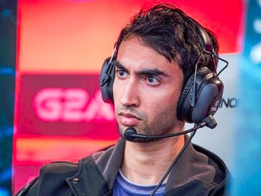
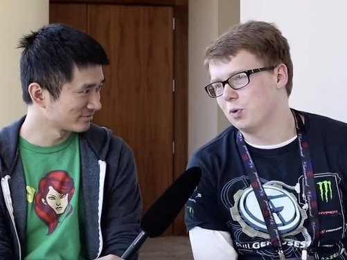
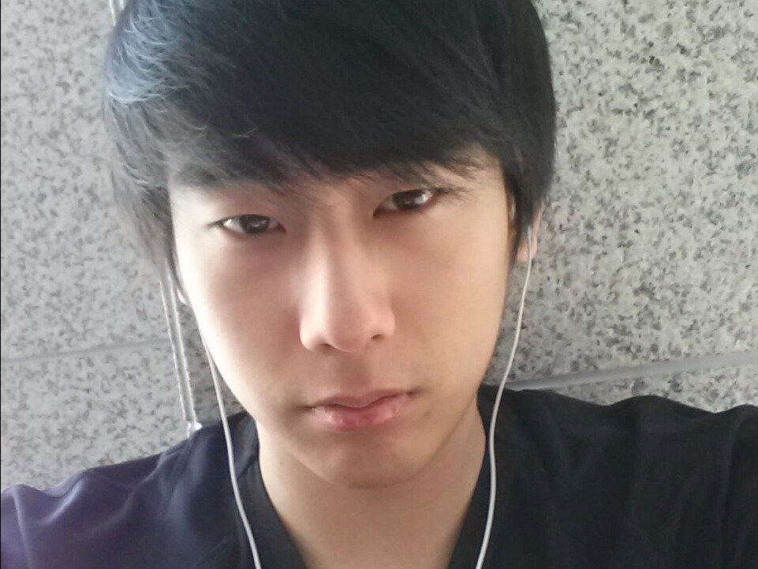
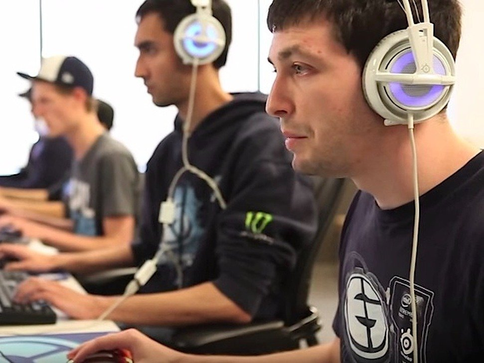

It may sound too good to be true, but people actually play video games for a living. And they make a killing. E-Sports Earnings has ranked the 100 players with the highest overall earnings from competitive gaming. Over 100 gamers have earned more than $250,000 in prize money alone, without counting the sponsorship deals and income that many of these players receive from streaming their practice games on services like Twitch. But they pale in comparison to the top-10 players, who have earned more than $10 million for their gaming prowess alone.
Arora is an American "Dota 2" player who came first with Loomis and the Evil Geniuses this year in The International 2015. He took home a whopping $1,326,932.14 from the tournament.
Dager (right) with TeamLiquid.net administrator Ken "Hot Bid" Chen. Dager now plays for Evil Geniuses.YouTube/Dota 2 Now another "Dota 2" player, American gamer Dager used to play "Heroes of Newerth," which was originally developed by S2 Games.
Kurtis "Aui_2000" LingTwitter/@Aui_2000 Ling is a Canadian "Dota 2" player. At 22, he's the second-youngest in e-Sports Earning's top 10.
Clinton"Fear" LoomisYouTube/Dota 2 American gamer Loomis plays "Dota 2" on the Evil Geniuses team, and made $1,326,932.14 from this year's The International, the biggest "Dota 2" tournament in the world.
Zhang "xioa8" NingYouTube/Top 5 Ning captains Newbee, which won the "Dota 2" TI4 Grand Finals in Seattle last year. His team includes Zhang "Mu" Pang, Wang "SanSheng" Zhaohui, Jiao "Banana" Wang, and Chen "Hao" Zhihao.